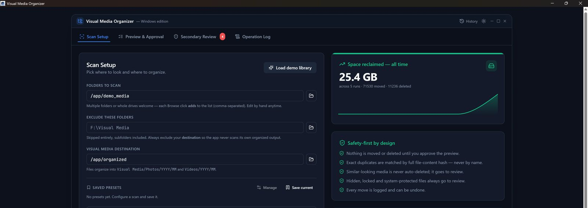
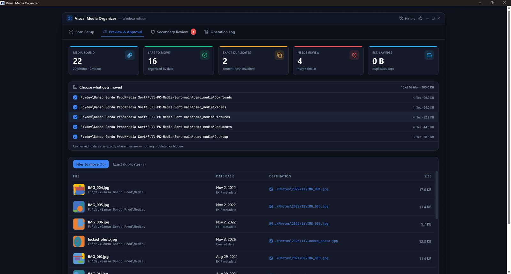
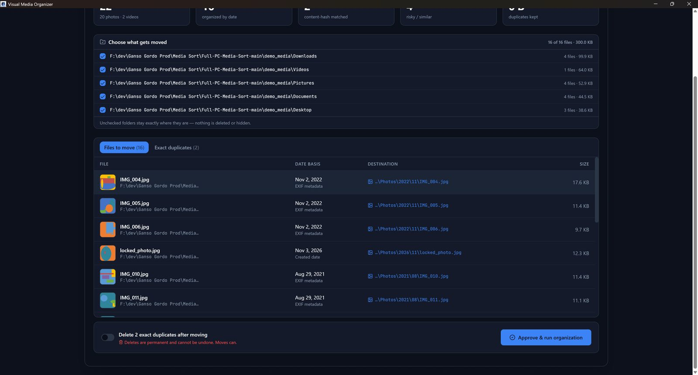
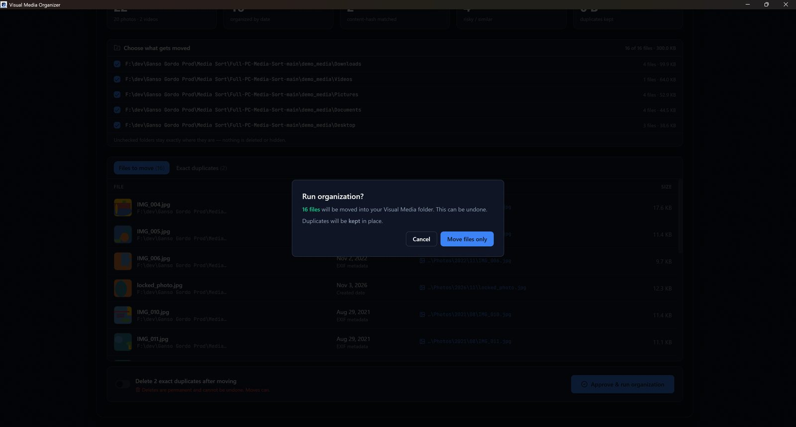
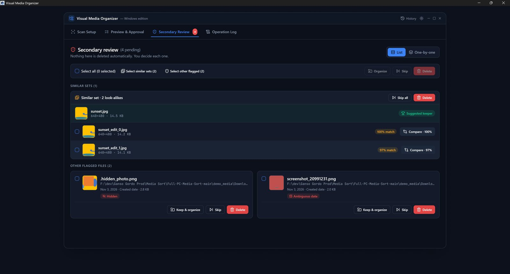
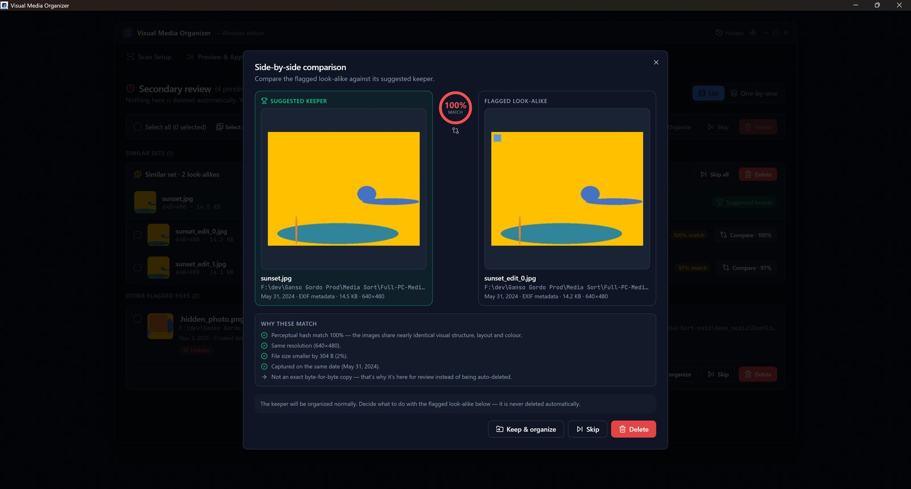
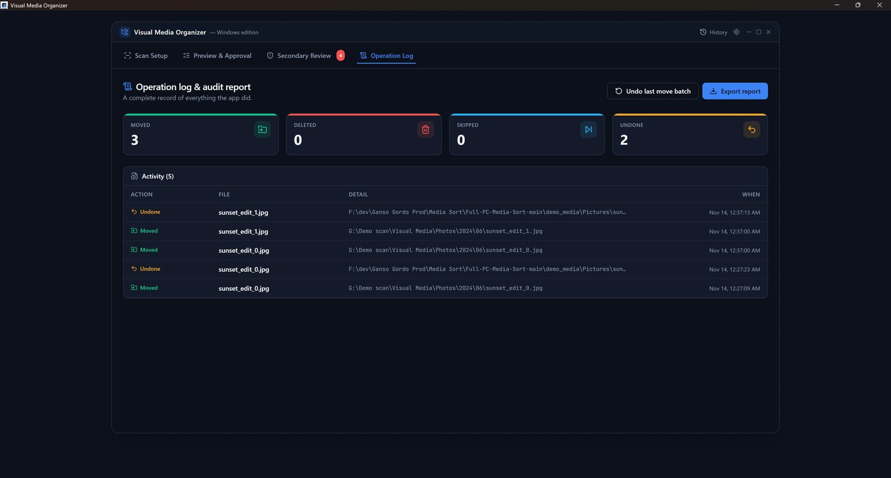

Scan every drive and folder you choose, find exact duplicates and visually similar photos, then organize everything into one clean, dated library — with your approval on every single action.
Download on the Microsoft Store
Most dedupe tools want you to trust a big red "auto-clean" button. This one never asks you to.
Pick multiple drives and folders in one pass — internal, external, USB — and exclude any subfolders you don't want touched.
Exact duplicates matched by full file-content hash, never by name. Visually similar photos grouped with a match percentage so you can eyeball the near-misses.
Nothing moves and nothing deletes until you review the preview and say so. System files, hidden files, and anything ambiguous goes to review — never to the trash.
Every organize run is logged as a batch. Changed your mind? One click puts every file right back where it came from.
No account, no sign-in, no telemetry, no uploads. Your photos, file names, and folder structure never leave your machine. Ever.
Recognizes OneDrive, Dropbox, and Google Drive folders and leaves them alone by default — you decide if and when they're included.
Four steps between "where did all my drive space go" and a clean library.
Any mix of drives and folders, with exclusions. Run it overnight on big libraries — it chugs along in the background.
See exactly what would move and what would be cleaned, grouped and explained, before anything happens.
One click files everything into a tidy year/month library. Duplicates and look-alikes wait for your call.
The operation log remembers every batch. Restore everything, even days later.
Real screens from the real app — no mockups.






The short version: it never does anything behind your back.
No. The app makes no network connections for your media at all — no cloud analysis, no accounts, no telemetry. Everything is hashed and compared on your own PC. Our privacy policy is one page and says exactly that.
Never. Exact duplicates are matched by content hash and shown to you. Similar photos are never auto-deleted — they go to a review queue with a suggested keeper. Deletions only happen when you explicitly approve them, and the app marks clearly which actions are permanent.
Cloud-synced folders are recognized and excluded by default, so the app won't fight your cloud sync. You can explicitly opt a cloud folder in if you want it scanned.
Yes — it was built and tested on a 64,000-file, 892 GB library spread across four drives (including two USB externals). Scans run in the background; big ones can run overnight. Scan results are saved, so you can close the app mid-review and pick up where you left off.
Windows 10 and 11, 64-bit. $2.99, one time, from the Microsoft Store. No subscription, no in-app upsells, no "pro tier."
Built by someone who needed it — tested on his own 185 GB of duplicates.
Get No Frills Media Organizer$2.99 one-time · Microsoft Store · Windows 10/11